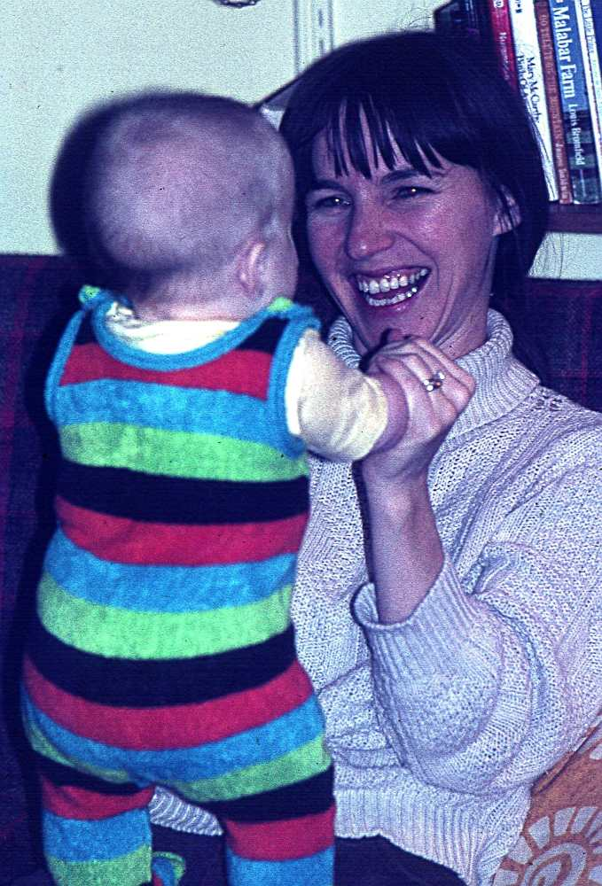

When two people unite, they necessarily bring along some dissparate inflluences, unique to each, from their childhood. Like the shadows on the wall of Plato's cave, the families of each mate give a shadow of the objective reality of familial influence.
Similarlly the family of Pat and Walt will have some influence of their upbringing
Parents, Jeff and Clara
Patricia's parents, Jeff Augustus and Clara Gray Bird had a house full of children by the time Pat was born. World War Two started for the United Sttes, less than a year after her birth.
The oldest sons joined the miitary. Eddie, like his father went to the Navy in 1942. Earl had enlisted in the U S Army in 1940. Jeff Augustus (Snookum) went to the U S Navy 1942. Albert joined the Merchant Marines at age 17, in 1942.
There is a lot of love, care, and heartbreak in the future of this couople.
Preschool
Fort Worth
Patricia was born to Jeff Augustus and Clara (Gray ) Bird on January 30, 1941, in Fort Worth, TX.
The first house in Pat's life was on Bluff Street. Close enough to downtown Fort Worth that her Mother could walk to Everybody's Department Store.
Infant Patricia M Bird, About 1 year old
Already there's that Patricia smile developing
A lot of love, care, and thought went into that infant outfit. Likely Pat was not the first child in the family to wear it, and probably not the last.
Elementary School Years
Fort Worth
Pat and family lived on Bluff Street, overlooking the Trinity River. World War Two began less than a year after Pat's birth. Sometime later, her Father Jeff Augustus Bird decided to move the family to a farm near Hope Arkansas. Jeff sold out in 1946 or 1947 and moved his family back to Fort Worth where he resumed his plumbing shop.
Pat's first school must have been Charles Nash Elementary at 401 Samuels Ave, just a few blocks away. The school was built in 1927 and remains in use.
First grader, Patricia M Bird.
Her look suggests some of the strangeness of this new world of school, a world away from Father, Mother, sisters and brothers.
Second grader, Patricia M Bird.
Pat's second grade picture shows that she is much more comfortable with her school surroundings. She has learned the tremendous utility of a smile.
Fig.4 - It's Easter and Pat and younger sister Bette wear easter dresses
Pat's and Betty have had a successful egg hunt. Likely these were real eggs, dyed and decorated by Mother Clara or an older sister.
Ann Johnson, Pat Bird, Betty Bird
Pat, center; Betty, lower; and Ann Johnson in front of city water tower; this pic is next to Meadow Oaks, Haltom City home. Bird family has moved to 3430 Meadow oaks; a Haltom City water tower stands behind the three girls.
High School Years
Fort Worth
Most of the younger Birds went to Birdville High School, home of the Birdville Buffaloes
Their house on Meadow Oaks afforded an easy walk to the high school (renamed Haltom High in 1960) on Carson Street.
She ran in city sponsored races in Karori, Portland and Austin. She took regular walks with friends and children even at the onset of her illness.
Senior year picture, Patricia M Bird.
Pat's senior year picture shows her familiar adult features.
Bird Family Gatherings
Christmas 1953
For Christmas of 1953, the Fort Worth Star telegram planned a photo essay of of a large family gathering for winter holidays.
This Christmas must have been especially poignant for Jeff and Clara. Jeff never fully recovered from injuries in an automobile accident. Albert and Donald recovered from their war wounds, though Albert would never regain full use of his right arm. but still they were together from near and far, coast to coast.
Everyone at Christmas 1953
Daughters and daughters-in-law,
sons and sons-in-law,
and grandchildren in arm and on the floor.
This must have been a sweet moment for Jeff and Clara;
Pat claimed the clock on the mantle.
All the sons
Sport injuries kept David out of the military.
All the rest served in in one of the braches; some in two; Buddy came in uniform; Albert's right arm is still in recovery.
Clara and her 8 daughters.
In June of 1975 the Bird family held a reunion at an airport North of Fort Worth.
Some came later and missed the group pictures.
Jeff and Clara's family, circa 1975.
Donald was there, the photographer almost missed him entirely.
----
Pat and Walt Wed
Walt and Pat knew each other at Birdville High School, having Mrs Lange's Senior English and maybe Mrs Parrish's Junior English in common. They didn't really begin dating until after graduation.
Walt's Saturday night and Sunday morning's social opportunities were eliminated by his work at the Fort Worth Star Telegram, Saturday night into Sunday morning. Almost immediately after graduation, he added alternating Co-op student work at chance Vought Aircraft with semesters of engineering preparatory classes at Arlington State College.
So dating was pretty much limited to Friday nights. Sometimes double dating with Larry Mayo and Connie Blake or Kay Clarke and Wesley Roberts.
Patricia worked at a jewelry store in down town Fort Worth, then for Ma Bell, again in down town Fort Worth.
Father, Clyde; Mother Louise and Groom, Walton
Venue was the neighborhood Methodist Church, on Layton Street.
Best man,Mike Fox; groom, Walt, Bride, Pat, Bridesmaid, Kay Clarke and Brother Baker
Walt's Uncle Homer Bronstad was the wedding photographer; he did rather well.
Brother Baker congratulating the bride and wanting her to join his congregation.
Walt and Pat weren't prepared for the strength of tradition that took the wedding event out of their grasp and into the grasp of family.
Patricia holding her Jacqueline Kennedy pillbox hat and overnight case.
The couple are headed for their honeymoon in glorious Hot Springs Arkansas. What did you expect on a co-op student's pay?
Pat and Walt's Family
Ann Arbor to Austin
Patricia became a mother in Ann Arbor when her son, Matt was born at St Joseph's Hospital in Ann Arbor, Michigan.
Pat and Walt resided in the unincorporated town of Whitmore Lake, about ten miles north of Ann Arbor. She quit her job at Parke Davis Pharmaceuticals to devote full time to her child.
Anticipating her first born.
Chewey the cat in her lap, Pat sits at back of our first house at 362 Grove.
Glad that orddeal is over.
Tired and stressed, Pat begins a night of rest before the real work begins.
Now we are three.
Going from two to three is a big deal; not quite as big as going from one to two, but momentous nonetheless.
Both have had a long day.
An 8 hour job doesn't prepare you for this; how did Clara do this? 16 times?
Circa 1973. Bright Jumper suit from Elln and Ib Thompson.
Ib and Elln returned to Norway in the summer; they sent this suit for our new born.
Circa 1976. Gowned mom with twin in neonatal ward
Pat and Kate went home to the Austin house on Norris. Kris stayed behiind in the neonatal ward for a few more days. So Mom had to visit baby for a while.
Kate and Pat
Mom and oldest (By 10 minutes) daughter.
Kate and Kris on grandmothers knitted blanket
For the first and almost last time Kate and Kris wear dresses. They lie on loving work by Grandmother Clara.
Moment of relaxation
Patricia relishing time to herself
Four on the floor
The photographer finds supine positions an easy way to keep his subjects imobile enough to focus and gauge exposure. Sculpted shag carpeting was in style 10 years before this.
Kids gotta crawl.
Their limbs and muscles grow daily. yesterday's neuromuscular program needs recalibrating daily.
And Mom's gotta rest.
That red Lazy-Boy looks tattered after three infants and a famously active rocker: Pat.
Now we are five.
Dad thought it was pretty easy; Mom, not so easy.
Time to sit in the back yard and watch spring come.
The Norris house had pink asbestos siding and gray trim. Colors popularized by Chevrolet cars of the '55 era. By 1978, the combination looked misplaced on a home.
Clyde, Matt, Kris and Kate.
Walt's 82 year old Father Clyde plays with the children on the swing.
The five of us in front of the Norris home
Norris house was embedded in live oak trees.
Yes, her eyes are green, aren't they?
I'm never really sure what color Pat's eyes are. As with all eyes, there are many colors there and incident light has strong influence.
Children play in a leaf pile.
This is late autumn, red oak leaves, live oaks shed in spring.
Scotty the cat adopted us. .
The view is in the direction of Jake and Auleen Landrum's home on Rabb Road
4 in a bed.
The water bed was heated. On a cold November morning, it could be especially attractive.
Pat on very short stilts
Pat gives the stilts a go.
Matt takes a picture of his parents
The angle of the picture shows the photographer was standing lower.
Sometims birthdays are overrated.
Patricia consoles Kate while Kris focuses on the cake.


{kind=link}
{kind=link}